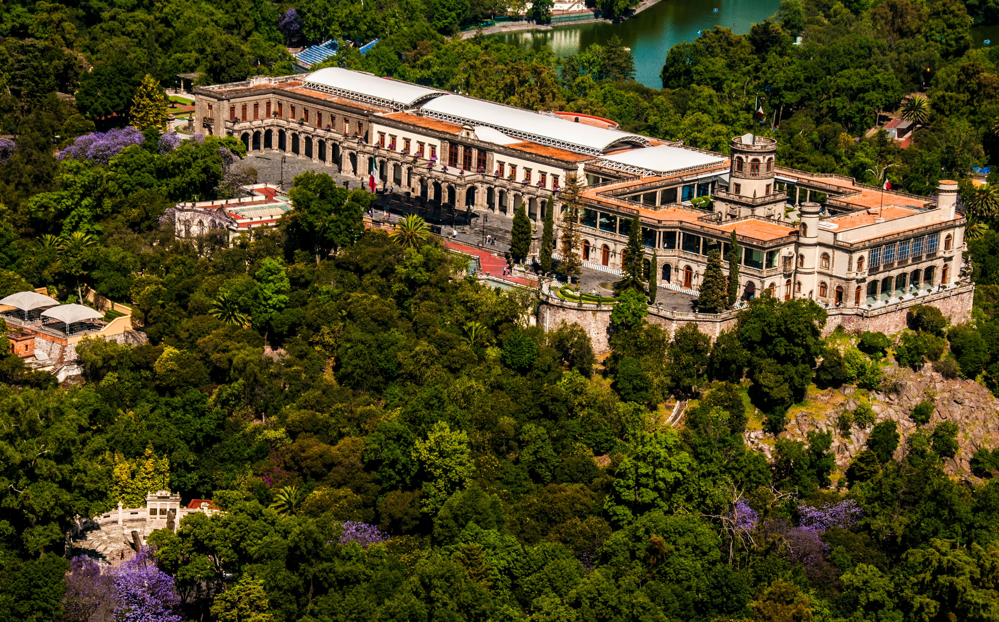

Cuando viajamos solemos ir a los museos de otros países para conocer fracciones de la historia, cultura y tradiciones de ese pueblo. Aquí tenemos un listado de los 10 museos de la Ciudad de México que no te puedes perder.
No hay mejor lugar para conocer la historia de México que en este museo
El Museo cuenta con más de 20 salas de exposición permanente y temporaria, auditorios y una gran biblioteca. Hay que dedicarle unas horas a recorrerlo porque es muy interesante.
En su interior se desarrollan diversas actividades artísticas. En el marco del Museo de Bellas Artes se dejan admirar obras murales de reconocidos artistas mexicanos (entre ellos, Diego Rivera y David Alfaro Siqueiros) y, luego, se encuentra el Museo Nacional de Arquitectura, la Orquesta Sinfónica Nacional, la Compañía Nacional de Ópera y también la de Danza.
Se trata de un museo arqueológico que muestra los hallazgos que se realizaron en el Centro Histórico de Ciudad de México en relación con el Templo Mayor, que fue un recinto sagrado de importancia de la capital del Imperio Mexica.